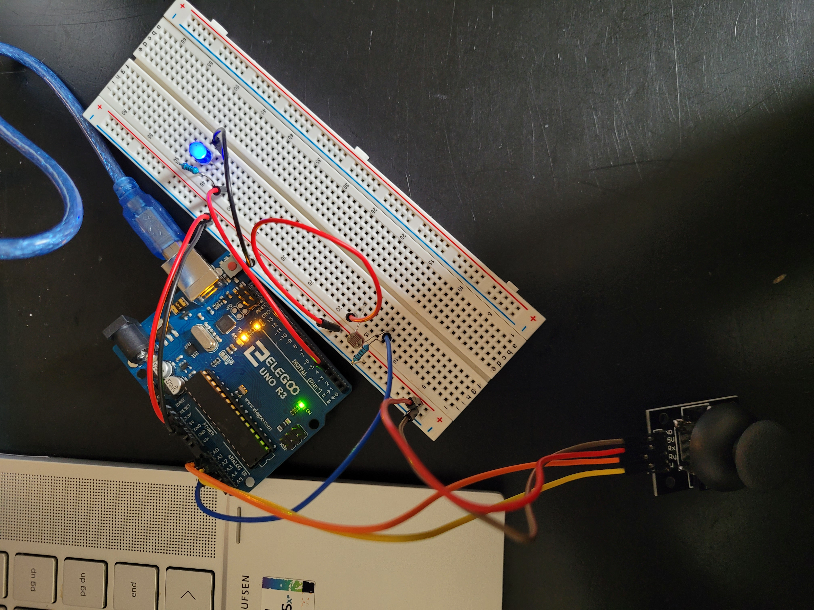
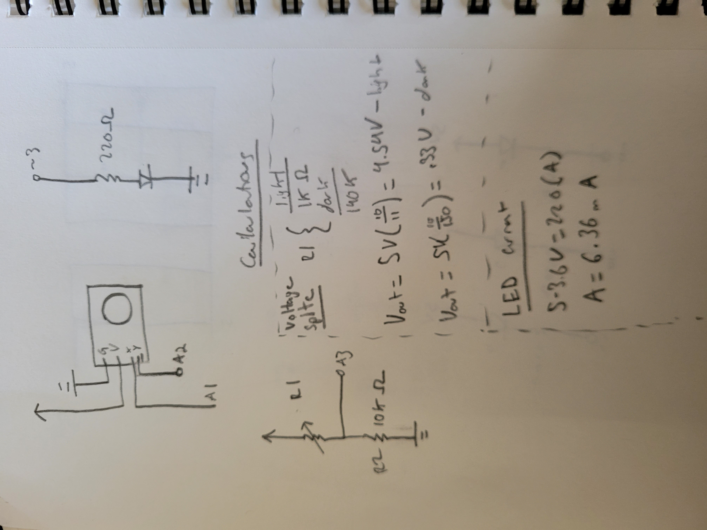

Shivank's Assignment 6!
For this assignment, I created a circuit and p5.js program that allows the users to paint a canvas with circles usiing the joy stick. The color of the circles depends on the light level. Also, clicking on the webpage and dragging up or down changes the light level of a physical LED.

Image of the circuit.

Image of the schematic and calculations. I did two calculations: The first being one to calculate the current in the LED. I used 220Ohm resistor to ensure the LED stays within an acceptable current range of 1mA - 30mA as per the datasheet.I also added a 10K resistor to the voltage divider photoresistor schematic to have the voltage divide at an appropriate range. If the resistor was too small, the changes in voltage from dark to light is less noticable because as measured, the photoresistor measures around 1K Ohms in the light and 140K Ohms in the dark. I did calculations for approximate values for max light and max dark.
This is the arduino code...
int ledPin = 3; // define our LED pin
void setup() {
Serial.begin(9600); // initialize our serial communication
}
void loop() {
// ------- sending data to Serial ---- //
int s1 = analogRead(1); // define our three analogRead pins
int s2 = analogRead(2);// define our three analogRead pins
int s3 = analogRead(3);// define our three analogRead pins
Serial.print("["); // starts our list
Serial.print(s1); // xPos is at index 0
Serial.print(","); // comma separator for list construction
Serial.print(s2); // yPos is at index 1
Serial.print(","); // comma separator for list construction
Serial.print(s3); // lightlevel at index 2
Serial.println("]"); // ends our list
// ----- reading data from Serial ------ //
int brightness;
// check if data has been sent from the computer:
if (Serial.available() > 0) {
// read the most recent byte (which will be from 0 to 255):
brightness = Serial.read();
// set the brightness of the LED:
analogWrite(ledPin, brightness);
}
}
This is the p5.js code...
var serial; // variable to hold an instance of the serialport library
var portName = 'COM4'; //rename to the name of your port
var dataarray = []; //some data coming in over serial!
function setup() {
serial = new p5.SerialPort(); // make a new instance of the serialport library
serial.on('list', printList); // set a callback function for the serialport list event
serial.on('connected', serverConnected); // callback for connecting to the server
serial.on('open', portOpen); // callback for the port opening
serial.on('data', serialEvent); // callback for when new data arrives
serial.on('error', serialError); // callback for errors
serial.on('close', portClose); // callback for the port closing
serial.list(); // list the serial ports
serial.open(portName); // open a serial port
createCanvas(1200, 800); // sets up our canvas
background(0x08, 0x16, 0x40); // colors the background blue
}
// get the list of ports:
function printList(portList) {
// portList is an array of serial port names
for (var i = 0; i < portList.length; i++) {
// Display the list the console:
print(i + " " + portList[i]);
}
}
function serverConnected() {
print('connected to server.'); // message for connection
}
function portOpen() {
print('the serial port opened.') // message for port open status
}
function serialError(err) {
print('Something went wrong with the serial port. ' + err); // error message
}
function portClose() {
print('The serial port closed.'); // port close message
}
function serialEvent() {
if (serial.available()) {
var datastring = serial.readLine(); // reading some serial data as a string
var newarray; // define our array to place data in
try {
newarray = JSON.parse(datastring); // checks to see if we can parse serial
if (typeof newarray == 'object') { // if we can parse serial (as an object), set it as our new array
dataarray = newarray;
}
console.log("got back " + datastring); // prints our data to console log
} catch(err) {
// got something that's not a json
}
}
}
function mouseDragged(){ // function that controls mouse
bright = floor(map(mouseY, 0, height, 0, 255)); // maps scrolling from zero to height of page to 0-255
bright = constrain(bright, 0, 255); // constrains value in case some data is out of bounds
serial.write(bright); // write our new data to be analog read in arduino/
console.log(bright); // write our daya to the console log.
}
function draw() {
var color = map(dataarray[2], 0, 1023, 0, 255); // maps color variable from 0-1023 to 0-255.
var x = map(dataarray[0], 0, 1023, 0, width);// maps x variable from 0-1023 to 0-255.
var y = map(dataarray[1], 0, 1023, 0, height);// maps y variable from 0-1023 to 0-255.
fill(color,0,255 - color,63); // fill! if it it light, color is read. If dark, color is blue -- 25% opacity
ellipse(x, y, 100, 100); // draw an ellipse with our x and y.
}
This is the circuit in practice!!